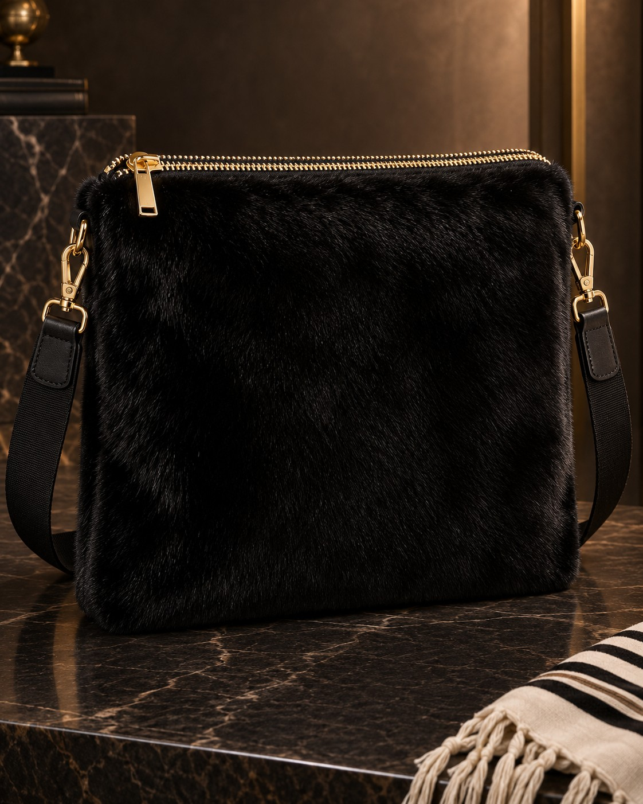
Design 25
The Black Mink
Black mink
A focused collection of luxury Tallis bags in genuine fur, full-grain leather, suede, and natural hide. Five fur designs and eight leather/hide zipper designs — all with a clean Tallis-bag shape and detachable shoulder strap.
Five luxury fur versions, each kept in a clean traditional Tallis-bag form with a top zipper and detachable shoulder strap.

Black mink
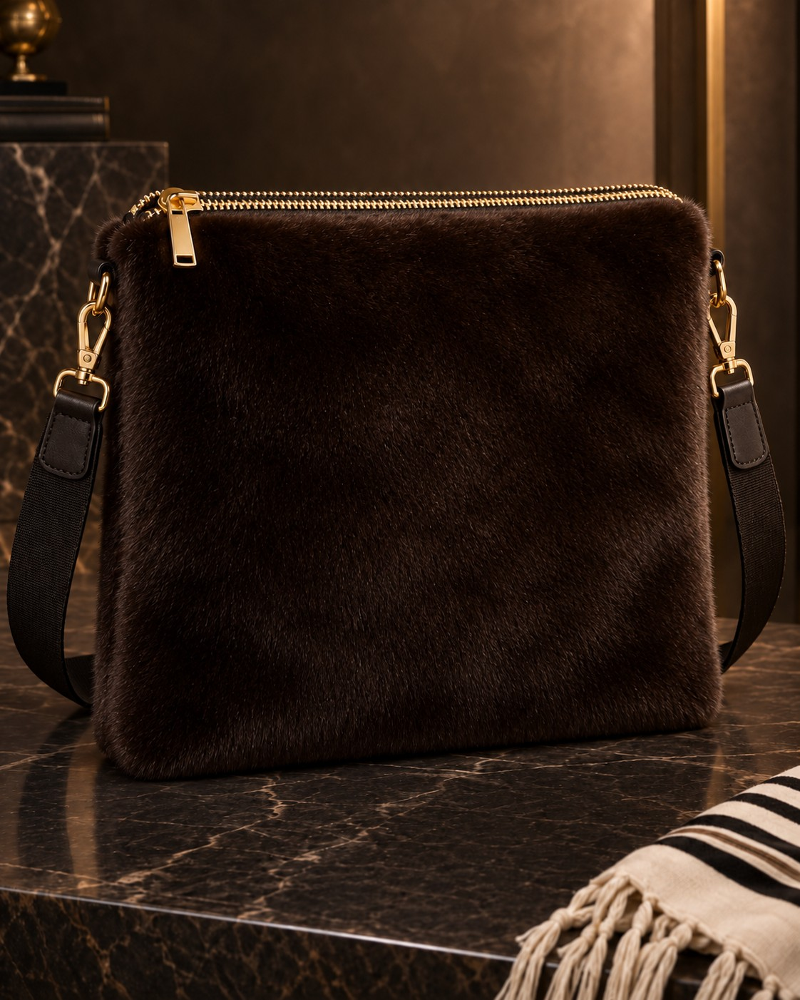
Espresso mink
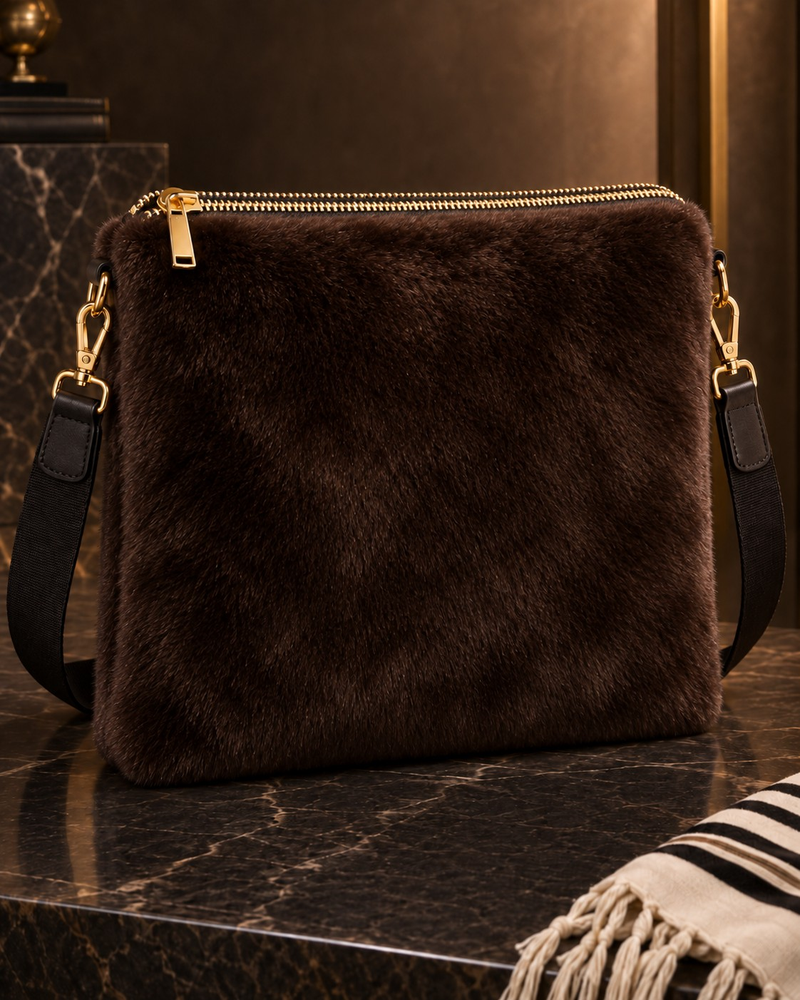
Sheared beaver
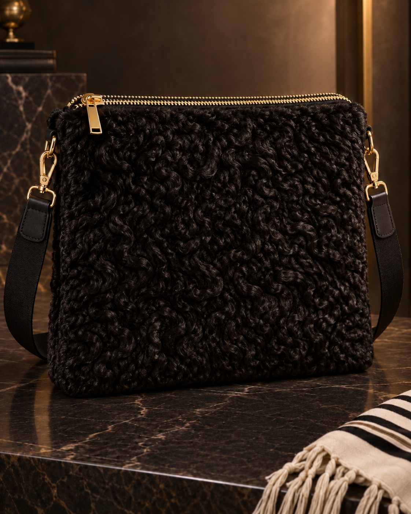
Karakul / Persian lamb
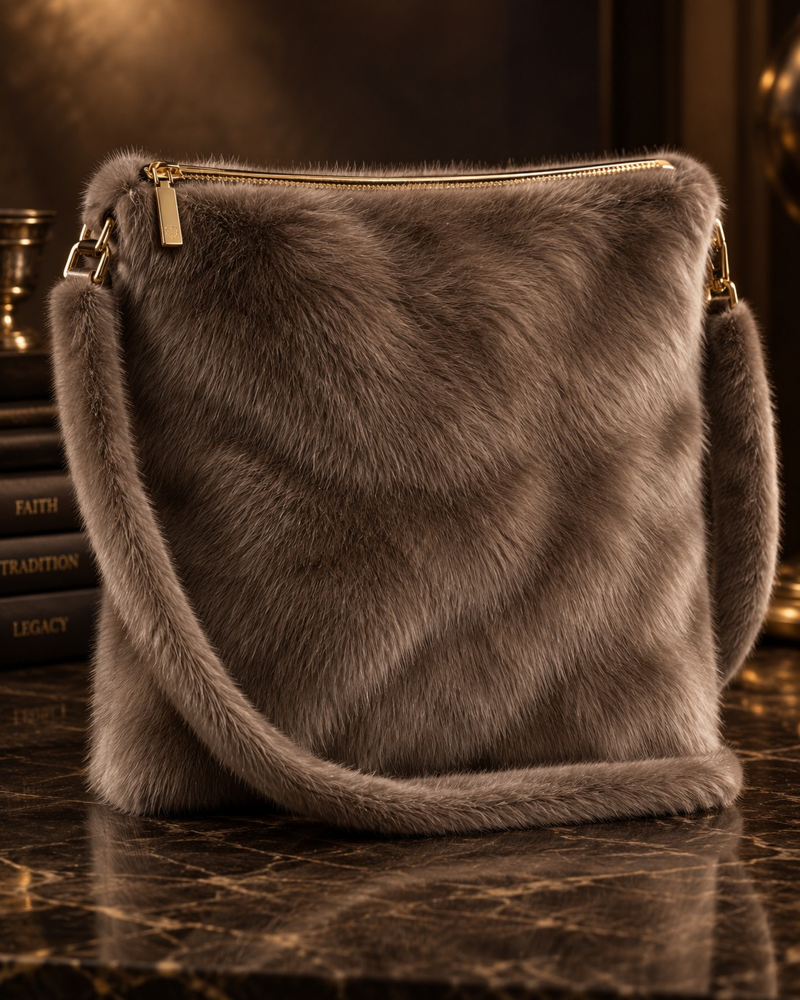
Nutria fur
Our eight clean zipper designs in full-grain leather, suede, and natural hair-on hide.
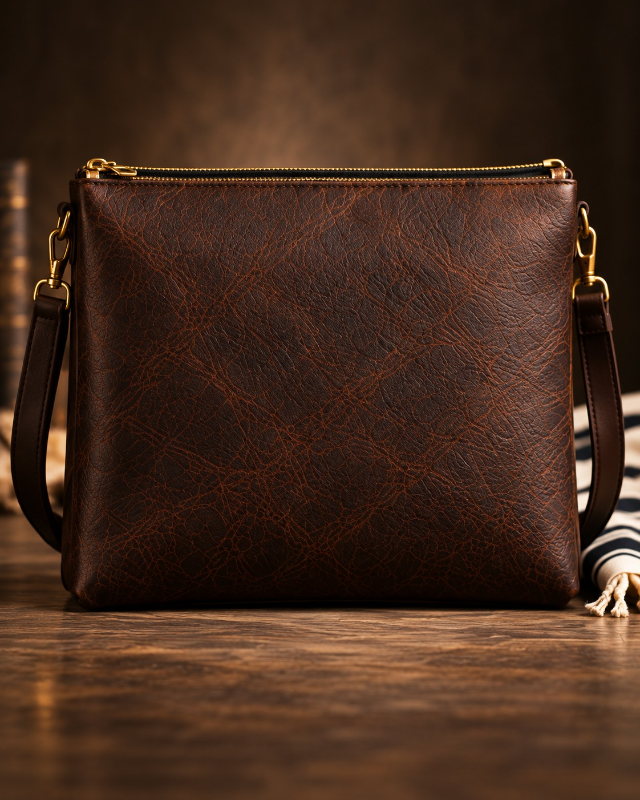
Full-grain leather
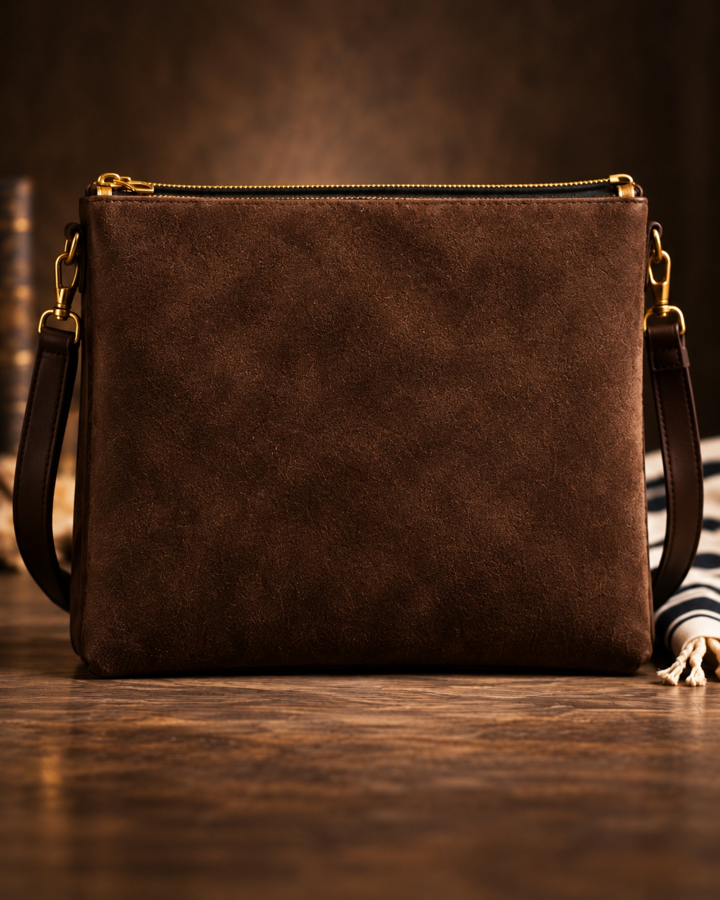
Chocolate suede
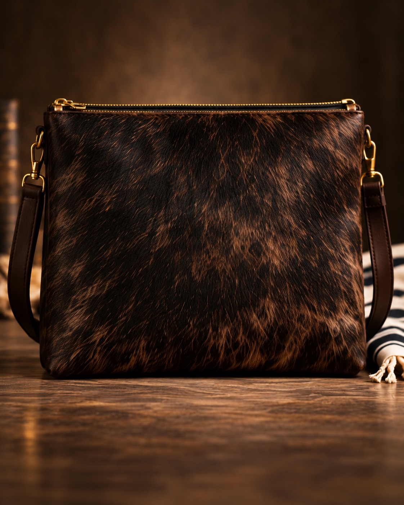
Brindle hide
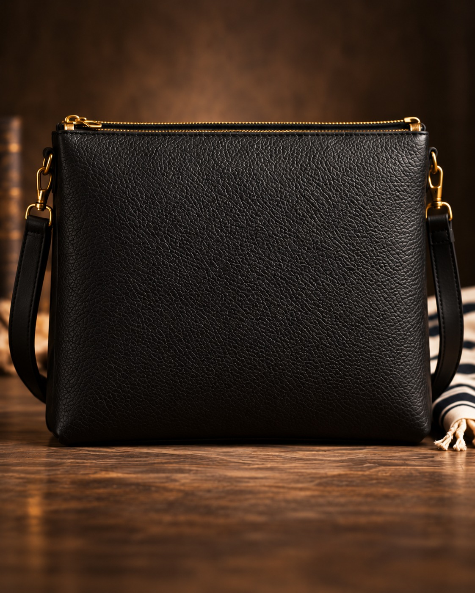
Black leather
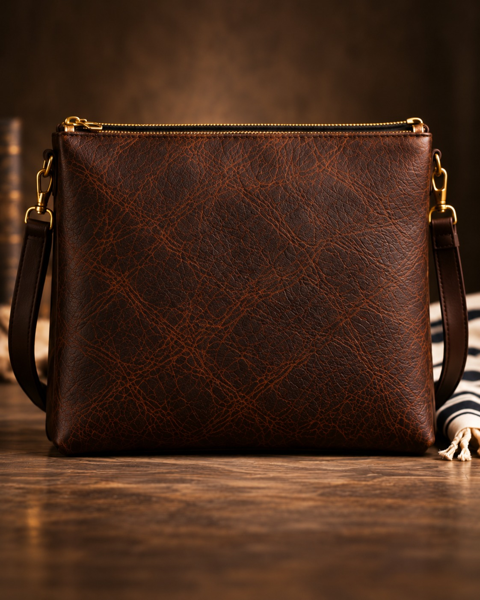
Distressed leather
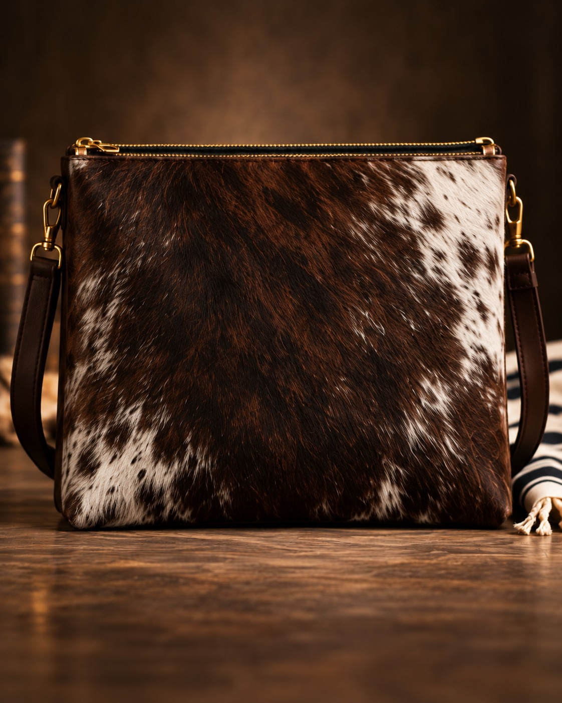
Spotted hide
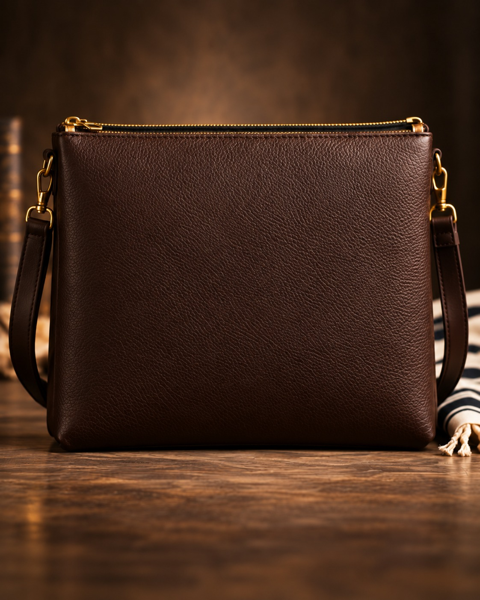
Smooth chocolate leather
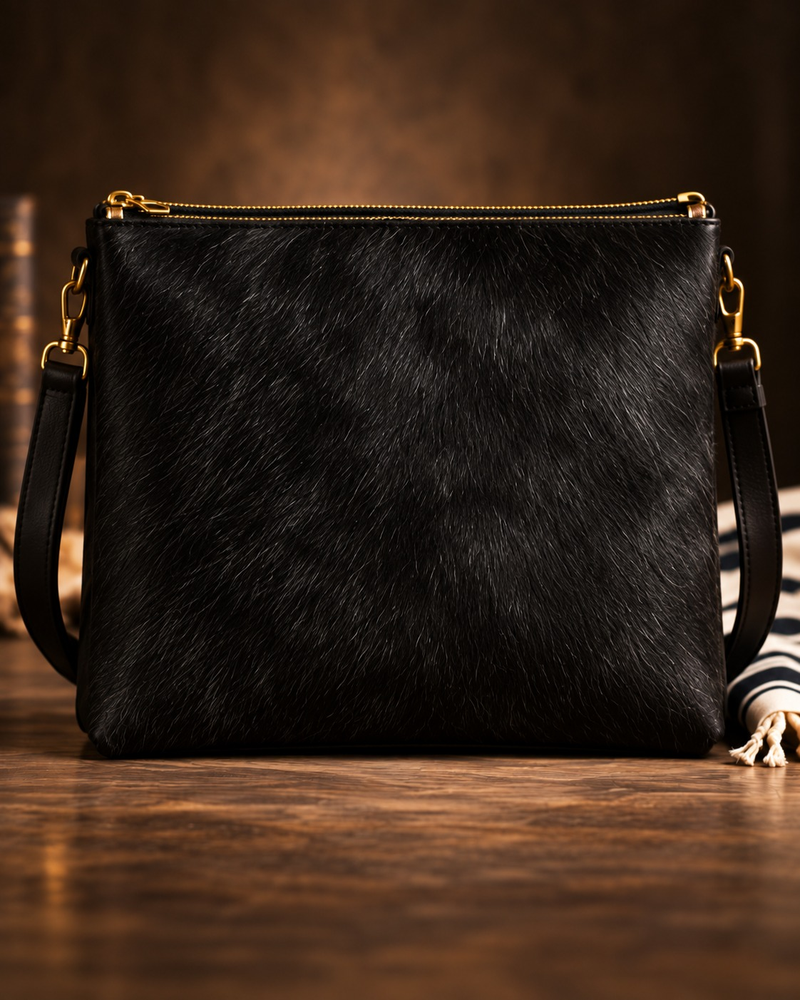
Black hair-on hide